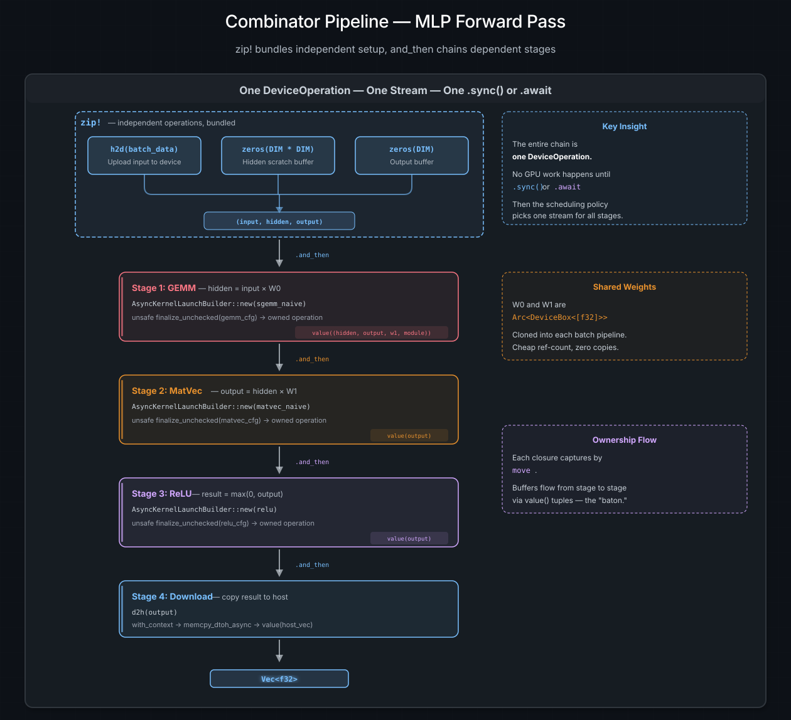

Combinators and Composition#
A single kernel launch is rarely the whole story. A real GPU workload might upload input data, multiply two matrices, apply an activation function, and copy the result back to the host -- four distinct operations that must happen in exactly that order. This chapter shows how cuda-oxide's combinator system lets you snap these pieces together into a pipeline that stays lazy and stream-agnostic until the moment you execute it.
請參閱
The DeviceOperation Model for the foundational trait and execution methods that combinators build on.
The problem: multi-step GPU work#
Imagine you are building a simple neural-network forward pass. The steps are:
Upload the input batch from host to device.
GEMM -- multiply the input by weight matrix W0.
ReLU -- apply an activation function to the result.
Download the output back to the host.
Each step depends on the previous one. You cannot run the GEMM until the upload
finishes, and you cannot download until the ReLU is done. In the synchronous
world, you would write four separate .sync() calls:
let input = h2d(batch_data).sync()?; // upload
let hidden = launch_gemm(input, w0).sync()?; // GEMM
let output = launch_relu(hidden).sync()?; // ReLU
let result = d2h(output).sync()?; // download
This works, but it has a problem. Each .sync() goes through the scheduling
policy, which may assign a different stream each time. Between streams there
are no ordering guarantees -- the GEMM might start before the upload finishes on
a different stream. And even if the policy happens to pick the same stream,
every .sync() blocks the host thread, submits one operation, blocks again,
submits the next, and so on. You are paying the round-trip cost of "hand the
recipe to the kitchen, wait for the dish, hand the next recipe" four times over.
What you really want is to write the entire meal plan on one card and hand it to the kitchen once.
and_then -- "when this finishes, do that"#
The and_then combinator chains two operations: run the first, pass its output
to a closure, and the closure produces the second operation. Both run on the
same stream, so CUDA's in-order guarantee means the second always sees the
first's results:
let pipeline = h2d(batch_data)
.and_then(|input| launch_gemm(input, w0))
.and_then(|hidden| launch_relu(hidden))
.and_then(|output| d2h(output));
let result: Vec<f32> = pipeline.sync()?;
The entire chain is a single DeviceOperation. No GPU work happens when you
write it -- you are just describing the sequence. When you call .sync(), the
scheduling policy picks one stream, and the chain runs from top to bottom on
that stream. One trip to the kitchen, one wait, four courses.
How data flows through the chain#
Each and_then closure receives the previous stage's Output as its argument.
The closure must return a new DeviceOperation, which becomes the next link in
the chain:
h2d(batch) → DeviceBox<[f32]>
│
└─ and_then ─► launch_gemm(input, w0) → DeviceBox<[f32]>
│
└─ and_then ─► launch_relu(hidden) → DeviceBox<[f32]>
│
└─ and_then ─► d2h(output) → Vec<f32>
The type of the whole chain is inferred by the compiler. You never need to name the intermediate types -- they flow through the closures automatically.
Carrying extra data with value()#
Kernel launches produce () -- they work through side effects on device memory,
not return values. But the next stage needs the buffer handles, the module
reference, and possibly other metadata. The trick is to use value() to bundle
everything the next stage needs:
let pipeline = launch_gemm(input, hidden)
.and_then(move |()| {
// The kernel produced () but we still have `hidden` and `module`
// from the enclosing scope. Pack them up for the next stage.
value((hidden, module))
})
.and_then(move |(hidden, module)| {
launch_relu(hidden, module)
});
The move keyword is important -- each closure captures the data it needs by
ownership. When the closure runs, it consumes those values and passes them
forward via value(). This is Rust's ownership system doing exactly what it
was designed for: ensuring each buffer is used by exactly one stage at a time,
with no dangling references.
and_then_with_context -- when you need the stream#
Sometimes a closure between stages needs to perform a raw CUDA operation --
an async memory copy, an event record, or a synchronization call. These
require the CUstream handle, which is not available in a normal and_then
closure. and_then_with_context passes both the previous result and the
ExecutionContext:
let pipeline = launch_kernel(input)
.and_then_with_context(|ctx, gpu_result| {
let stream = ctx.get_cuda_stream();
copy_result_to_staging(stream, gpu_result)
});
Use this sparingly -- most pipelines can be built entirely with and_then and
the helper functions (h2d, d2h, zeros) that internally use with_context.
zip! -- bundling independent work#
Not everything is sequential. Before you can run the forward pass, you need to allocate three buffers: the input, a scratch buffer for the hidden layer, and an output buffer. These allocations are independent -- none depends on the others. But each one returns a value you need later.
If you used and_then for all three, you would end up nesting closures awkwardly
to carry all the results forward:
// Don't do this -- it works but is hard to read
let pipeline = h2d(batch_data)
.and_then(|input| {
zeros(DIM * DIM).and_then(move |hidden| {
zeros(DIM).and_then(move |output| {
value((input, hidden, output))
})
})
});
zip! solves this by combining independent operations into a single operation
that returns a tuple of their results:
use cuda_async::zip;
let pipeline = zip!(h2d(batch_data), zeros(DIM * DIM), zeros(DIM));
// pipeline: impl DeviceOperation<Output = (DeviceBox, DeviceBox, DeviceBox)>
let (input, hidden, output) = pipeline.sync()?;
Much cleaner. zip! accepts two or three arguments and executes them in
sequence on the same stream. The results are collected into a tuple and
returned together.
小訣竅
The name zip comes from the data-composition pattern -- two independent
results zipped into a tuple -- not from parallel execution. All arms run on
the same stream in order. For true concurrent execution across streams, see
Concurrent Execution.
Combining zip! with and_then#
The real power shows when you combine them. zip! handles the independent
setup, and and_then handles the dependent pipeline:
let pipeline = zip!(h2d(batch_data), zeros(DIM * DIM), zeros(DIM))
.and_then(|(input, hidden, output)| launch_gemm(input, hidden, w0))
.and_then(|hidden| launch_relu(hidden))
.and_then(|result| d2h(result));
This reads almost like pseudocode: "allocate three buffers, then GEMM, then
ReLU, then download." The entire thing is one DeviceOperation that runs on
one stream when you .sync() or .await it.
.arc() -- sharing results across pipelines#
In a batch-processing scenario, you might load model weights once and share
them across multiple forward passes. Each batch pipeline needs a reference to
the weights, but DeviceOperation consumes its output by value. You cannot
move the same DeviceBox into four different closures.
.arc() wraps the output in Arc<T>, making it cheaply cloneable:
let (w0, w1) = zip!(
h2d(w0_host).arc(),
h2d(w1_host).arc()
).await?;
// w0: Arc<DeviceBox<[f32]>> -- clone it into each batch
for batch in batches {
let w0 = w0.clone();
let w1 = w1.clone();
tokio::spawn(build_forward_pass(batch, w0, w1).into_future());
}
The weight buffers live on the device, shared via Arc, and each batch pipeline
holds a cheap Arc::clone. The weights stay alive as long as any batch is still
using them, and Rust's reference counting handles the cleanup automatically.
unzip! -- splitting a paired result#
Occasionally you have an operation that produces a tuple but you want to feed
each element into a different downstream chain. unzip! splits a pair-producing
operation into two independent operations that share execution -- the source
runs at most once:
use cuda_async::unzip;
let pair_op = zip!(allocate_a(), allocate_b());
let (op_a, op_b) = unzip!(pair_op);
let result_a = op_a.and_then(|a| process_a(a));
let result_b = op_b.and_then(|b| process_b(b));
Under the hood, unzip! creates a shared memoization node. Whichever branch
executes first triggers the source; the second reads the cached result. This is
useful for splitting a shared setup step into diverging downstream pipelines.
Putting it all together: an MLP forward pass#
{kind=link}

Data flow through an MLP forward pass built with combinators. zip! bundles
three independent allocations at the top. Four and_then stages chain
sequentially: GEMM, MatVec, ReLU, and D2H. Types flow between stages via
value() tuples. The entire chain is one DeviceOperation — nothing executes
until .sync() or .await.#
Here is a simplified version of the async_mlp example that demonstrates
every combinator working together. This function returns a single
DeviceOperation describing the entire forward pass for one batch:
use cuda_async::launch::{AsyncKernelLaunchBuilder, OwnedAsyncKernelLaunch};
fn forward_pass(
batch: Vec<f32>,
w0: Arc<DeviceBox<[f32]>>,
w1: Arc<DeviceBox<[f32]>>,
module: Arc<CudaModule>,
) -> impl DeviceOperation<Output = Vec<f32>> {
// Setup: allocate input + scratch buffers (independent → zip them)
zip!(h2d(batch), zeros(DIM * DIM), zeros(DIM))
// Stage 1: GEMM — hidden = input × W0
.and_then(move |(input, hidden, output)| {
let func = module.load_function("sgemm_naive").unwrap();
let mut builder = AsyncKernelLaunchBuilder::new(Arc::new(func));
builder.push_args((DIM as u32, DIM as u32, DIM as u32,
1.0f32,
input.cu_deviceptr(), input.len() as u64,
w0.cu_deviceptr(), w0.len() as u64,
0.0f32,
hidden.cu_deviceptr(), hidden.len() as u64));
// SAFETY: packet/config match sgemm_naive, the scheduler uses the
// module's context, and the owned wrapper retains its allocations.
let launch = unsafe { builder.finalize_unchecked(gemm_cfg) };
let launch = OwnedAsyncKernelLaunch::new(launch, (input, w0, hidden));
// Kernel returns (). Carry forward the buffers we still need.
launch.and_then(move |(_input, _w0, hidden)| {
value((hidden, output, w1, module))
})
})
// Stage 2: MatVec — output = hidden × W1
.and_then(move |(hidden, output, w1, module)| {
let func = module.load_function("matvec_naive").unwrap();
let mut builder = AsyncKernelLaunchBuilder::new(Arc::new(func));
builder.push_args((DIM as u32, DIM as u32,
hidden.cu_deviceptr(), hidden.len() as u64,
w1.cu_deviceptr(), w1.len() as u64,
output.cu_deviceptr(), output.len() as u64));
// SAFETY: packet/config match matvec_naive, the scheduler uses the
// module's context, and the owned wrapper retains its allocations.
let launch = unsafe { builder.finalize_unchecked(matvec_cfg) };
let launch = OwnedAsyncKernelLaunch::new(launch, (hidden, w1, output));
launch.and_then(move |(_hidden, _w1, output)| {
value((output, module))
})
})
// Stage 3: ReLU — result = max(0, output)
.and_then(move |(output, module)| {
let func = module.load_function("relu").unwrap();
let mut builder = AsyncKernelLaunchBuilder::new(Arc::new(func));
builder.push_args((output.cu_deviceptr(), output.len() as u64,
output.cu_deviceptr(), output.len() as u64));
// SAFETY: packet/config match relu, the scheduler uses the module's
// context, and the owned wrapper retains output.
let launch = unsafe { builder.finalize_unchecked(relu_cfg) };
OwnedAsyncKernelLaunch::new(launch, output)
})
// Stage 4: download result to host
.and_then(d2h)
}
Study how data flows through this pipeline:
zip!produces threeDeviceBoxhandles.The first
and_thenconsumes all three, launches GEMM, and packs the buffers it still needs into a tuple viavalue().The second
and_thenunpacks the tuple, launches MatVec, and passes forward only what the next stage needs.The third
and_thenlaunches ReLU in-place.The final
and_thencallsd2hto copy the result to the host.
The entire function returns impl DeviceOperation<Output = Vec<f32>>. Nothing
has executed. You can .sync() it, .await it, or hand it to tokio::spawn
and let the scheduling policy figure out which stream to use.
AsyncKernelLaunchBuilder is inert and safe to populate. Only
finalize_unchecked(raw_config) crosses the unsafe boundary and creates a
runnable operation. OwnedAsyncKernelLaunch keeps each stage's buffers alive
until that launch returns them. Application code should prefer generated
owned-async methods with PreparedLaunch<K>; the low-level form above is useful
when a module is loaded by name and no generated contract is available.
Quick reference#
Combinator |
What it does |
When to use it |
|---|---|---|
|
Run self, then |
Sequential dependent stages |
|
Like |
When the closure needs the raw stream |
|
Alias for |
Whichever reads better in context |
|
Run both, return |
Independent setup steps |
|
Run all three, return |
Same, for three operands |
|
Wrap output in |
Sharing results across pipelines |
|
Split a tuple-producing op into two |
Diverging downstream chains |
|
Wrap |
Feeding host data into pipelines |
|
Defer construction until the stream is known |
Wrapping raw CUDA driver calls |
請參閱
The Concurrent Execution chapter shows how to run
multiple pipelines concurrently using tokio::spawn, and the
Scheduling and Streams chapter explains how the
scheduling policy distributes pipelines across CUDA streams.